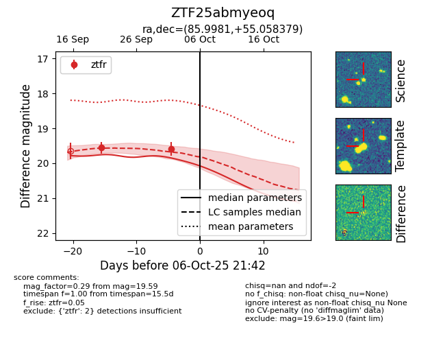
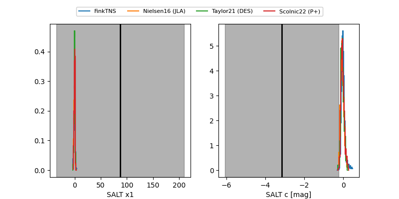

FINK: ZTF25abmyeoq
Lasair: ZTF25abmyeoq
ALeRCE: ZTF25abmyeoq
ZTF25abmyeoq (ztf,fink)
equatorial (ra, dec) = (85.9981,+55.05838)
galactic (l, b) = (157.1725,+13.05785)


last ztfr=19.59
2 ztfr detections